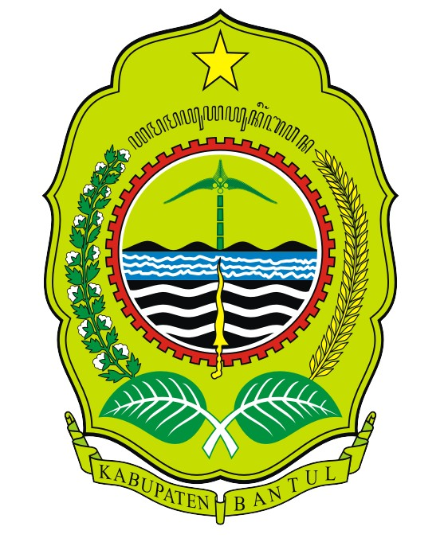
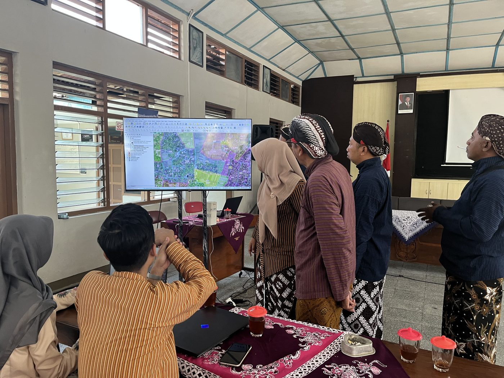

207
dataset tersedia

SATU DATA SPASIAL PEMBANGUNAN DAERAH
Simpul Jaringan Geospasial Kabupaten Bantul yang Terencana, Terbuka, Terstandar, dan Terintegrasi untuk kebijakan presisi & pelayanan masyarakat.
Jelajahi katalog
Peta dan dokumen geospasial pilihan untuk mengenal kondisi serta rencana pengembangan wilayah Bantul.
 Dataset
Statistik penduduk
Dataset
Statistik penduduk
Peta jumlah penduduk usia 70-74 tahun per kapanewon. Statistik bersumber dari Dinas Kependudukan dan Pencatatan Sipil Kabupaten Bantul.
Dinas Kependudukan dan Pencatatan Sipil Kabupaten Bantul
Lihat Dataset
Sebaran jembatan
Dataset
Sebaran jembatan
Peta titik lokasi jembatan di Bantul. Data baseline dari kegiatan deliniasi batas desa tahun 2019, telah divalidasi dan terstandarisasi KUGI.
Dinas Pertanahan dan Tata Ruang DIY; validasi oleh Diskominfo dan DPUPKP Kabupaten Bantul
Lihat Dokumen PDF
RDTR Sewon
Dokumen PDF
RDTR Sewon
Peta penetapan Sub BWP prioritas di BWP Sewon sebagai lokasi pelaksanaan program prioritas RDTR, tersedia dalam format PDF.
Dinas Pertanahan dan Tata Ruang (Kundha Niti Mandala Sarta Tata Sasana) Kabupaten Bantul
Lihat Dokumen PDF
RDTR Kasihan
Dokumen PDF
RDTR Kasihan
Peta alokasi subzona peruntukan di BWP Kasihan sebagai acuan pemanfaatan ruang dan peraturan zonasi.
Dinas Pertanahan dan Tata Ruang Kabupaten Bantul
Lihat Dokumen PDF
Pratinjau Geoportal
Dokumen PDF
Pratinjau Geoportal
Peta rencana jaringan irigasi dalam struktur ruang RTRW Kabupaten Bantul. Sumber: Perda Nomor 4 Tahun 2011.
Badan Perencanaan Pembangunan Daerah Kabupaten Bantul
Lihat Dashboard
Pratinjau Geoportal
Dashboard
Pratinjau Geoportal
Dashboard interaktif yang menyajikan penutup lahan dan sebaran ruang terbuka hijau (RTH) di Kabupaten Bantul.
Dinas Pertanahan dan Tata Ruang serta Dinas Lingkungan Hidup Kabupaten Bantul
Lihat Dataset
Peta tematik
Dataset
Peta tematik
Peta persebaran koperasi tidak aktif menurut kapanewon di Kabupaten Bantul. Sumber statistik: Dinas Koperasi, UKM, Perindustrian dan Perdagangan Kabupaten Bantul.
Dinas Koperasi, Usaha Kecil dan Menengah, Perindustrian dan Perdagangan Kabupaten Bantul
LihatTerhubung dan terintegrasi
JARING BANTER menjadi bagian dari ekosistem informasi geospasial dan data yang saling mendukung.
Portal nasional untuk mencari, melihat, dan mengakses informasi serta layanan geospasial Indonesia.
Portal Satu Data Kabupaten Bantul untuk menemukan data statistik dan data sektoral yang dikelola perangkat daerah.

Sistem Informasi Data Geospasial Kabupaten Bantul untuk menelusuri informasi spasial daerah sebagai dukungan perencanaan dan pengelolaan wilayah.
Rekam prestasi nasional
Apresiasi dan kabar pilihan dari perjalanan pengelolaan informasi geospasial Kabupaten Bantul.

Pemetaan batas04 Sep 2026 •Diskominfo Bantul
Pendampingan teknis pengukuran koordinat batas administratif berbasis partisipatif untuk kepastian batas wilayah.
 Verifikasi batas RT
Verifikasi batas RT
24 Agu 2026 •Tata Pemerintahan
Sinkronisasi data segmen garis batas RT dengan mengadopsi citra satelit tegak resolusi tinggi.
 Data geospasial
Data geospasial
18 Agu 2026 •Diskominfo Bantul
Pemerintah Kabupaten Bantul melalui Dinas Komunikasi dan Informatika menggelar sinkronisasi pemanfaatan data geospasial.
Cerita tentang orang, proses, dan tempat di balik informasi geospasial Kabupaten Bantul.
Dokumenter khusus
Di balik garis batas dan koordinat presisi, ada dedikasi para surveyor yang menelusuri wilayah Bantul.
Peringatan geospasial
Peringatan Hari Informasi Geospasial pada 17 Oktober 2025, menyoroti peran informasi geospasial bagi pembangunan.
Peningkatan kapasitas
Kegiatan pelatihan survei pemetaan untuk mendukung peningkatan keterampilan di bidang informasi geospasial.